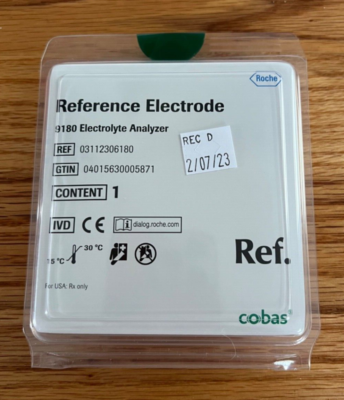

Corrects for minor voltage drifts by adjusting the intercept of the calibration curve. Essential for long-term stability.
Uses high and low standards to establish the slope, verifying the electrode's response across the entire clinical range.

The Roche 9180 Reference Electrode provides a stable electrical potential against which the measuring electrodes are compared. It is the anchor of the entire calibration system.
Consistent maintenance of the reference electrode ensures a stable slope efficiency (50–60 mV/decade), preventing diagnostic drift.